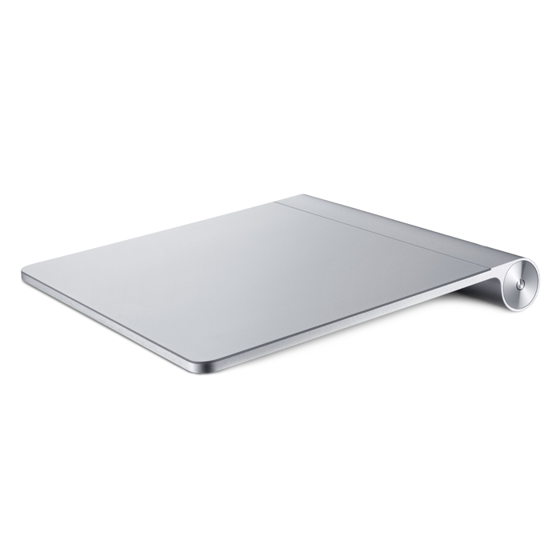
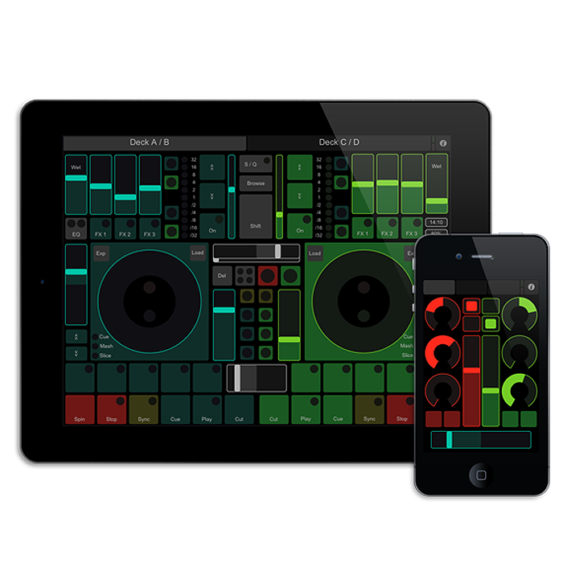
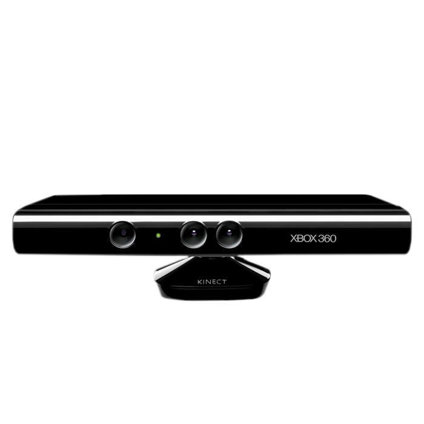

Immersive Dataviz
Controller Examples
The Controller
A list of all Controllers
- Nintendo Wii Remote
- Nintendo Wii Nunchuk
- Playstation Move
- Apple Magic Trackpad
- 3DConnexion Spacenavigator
- Smartphone/TabletPC TouchOSC
- Gamepads
- Xbox Kinect
Nintendo Wii Remote
Nintendo Wii Remote
Available controls:
- Accelerometer
- Up/Down/Left/Right Button
- Home Button
- A/B Button
- +/- Button
- 1/2 Button
Nintendo Wii Nunchuk

Nintendo Wii Nunchuk
Available controls:
- Accelerometer
- C Button
- Z Button
- X, Y
Playstation Move
Playstation Move
Available controls:
- TODO!!!
Apple Magic Trackpad

Apple Magic Trackpad
Available controls:
- Up to 20 Touchpoints
- Mouse-Moved, -Pressed, -Released, -Dragged
3DConnexion Spacenavigator
3DConnexion Spacenavigator
Available controls:
- X-, Y-, Z-Axis
- X-, Y-, Z-Rotation
- Button 0
- Button 1
Smartphone/TabletPC TouchOSC

Smartphone/TabletPC TouchOSC
Available controls:
You can customize the User Interface.
There are no fixed controls
Gamepads
Gamepads
Available controls:
A classic gamepad has a navigation cross and a few buttons.
No standard physical gamepad interface layout.
Each manufacturer developed its own layout
Xbox Kinect

Xbox Kinect
Available controls:
A depth of field or skeleton output.
But there is no standart output parameters.
Single User - Setup
At first we want to show the
single user setup as a diagramm.
Single User - Setup
Multi User - Setup
A multi user setup can contains 'n' number of controllers. The following setup is based on 3 controllers.